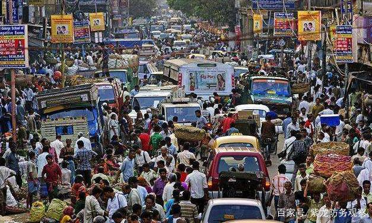

近日，据媒体报道，印度总理莫迪一夜之间突然调转枪口，已经把矛头锁定在国内，原来最近印度国内发生了一件大事，阿萨姆邦发生了动乱，为了平息动乱，印军已经派出几千名兵力介入平乱，大批军警直接发射催泪弹，但局势依然没有稳定下来，看来印度的头号对手已经不是巴铁了，国内的这些反对派才是巴铁真正的强援。那么这次印度的阿萨姆邦为何会爆发大规模的抗议事件呢？

原因还与印度方面推行公民身份注册新政有关，这也直接引发了当地民众的不满，这也直接激发了印度国内的矛盾，所以才会发生如此严重的动乱事件，实际上印度国内的矛盾还远不止如此，看来这个国家还将面临更加严峻的局面。对于印度而言，如今这个国家跟巴基斯坦的关系也十分紧张，而这次印度国内出现如此严重的动乱事件，直接导致印度雪上加霜，如果在这个时间点印巴之间爆发大战，那么印度将陷入绝境，这也是印度所不希望看见的结果，在这样的背景下，看来这个国家还是需要优先平定国内的动乱。
如果单从综合实力来看，巴基斯坦毫无疑问不是印度的对手，毕竟印度无论是人口，还是国土面积，又或者是经济总量，均远超过巴基斯坦，靠着这些能力，也让印度建立起强大的军队，所以巴基斯坦如果跟印度硬碰硬，无疑将处于吃亏的局面，但巴基斯坦也并非就没有对印度的优势，那就是巴基斯坦的人员素质更高，并且在边境地区的兵力更加集中，不怕印度挑衅。